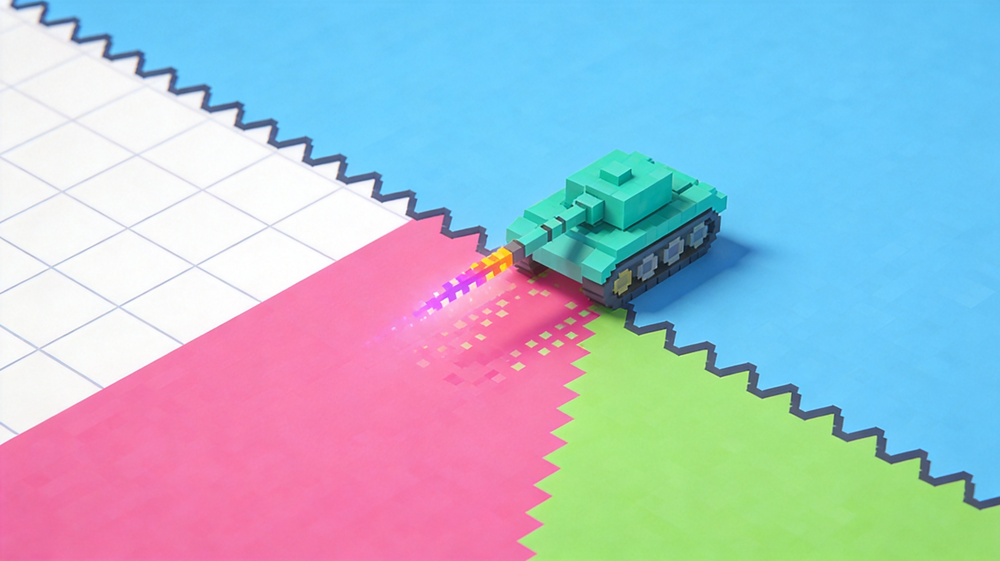
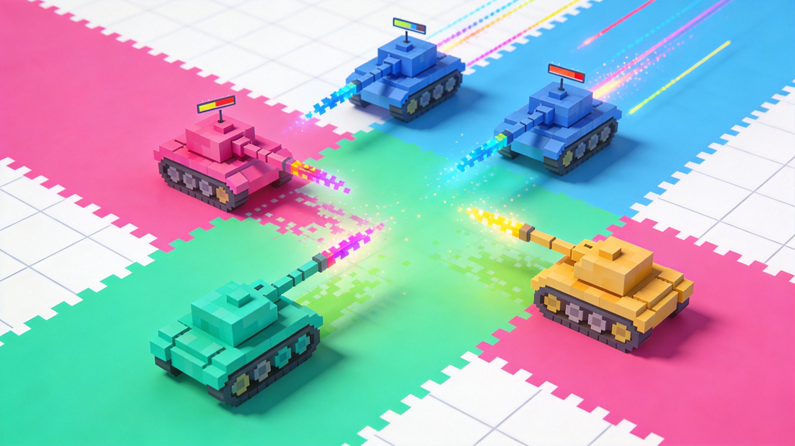
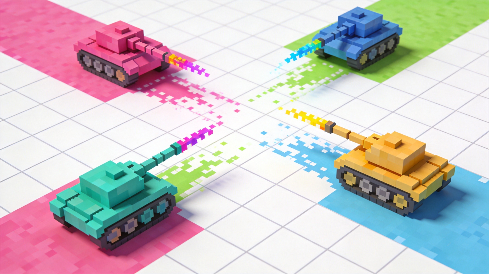

Introduction
ColorWars.io is a fast-paced, competitive multiplayer territory-control game published by Kepler Yazilim that blends Paper.io-style map painting with intense tank combat. What makes it unique is the integration of a real-time gold economy and leveling system into the traditional arena brawler format. Instead of just drawing lines, you manage resources to deploy powerful Turrets and Mortars while upgrading your tank's firepower. Players love the game for its strategic depth; you must balance aggressive territorial expansion with tactical defense against rivals trying to cut your trails. With quick, few-minute rounds and a global leaderboard, ColorWars.io offers a highly addictive experience where outsmarting opponents and dominating the map's largest area leads to ultimate victory.
Getting Started

To start playing ColorWars.io, simply spawn into the arena with a small colored base and your starter tank. Your primary objective is to expand your territory by firing pixel trails to paint and claim uncolored tiles across the map. Use the WASD or arrow keys to control your tank’s movement, and use your mouse to aim and shoot. As you paint tiles, you will earn gold and experience points. Accumulating enough XP levels up your tank, allowing you to choose from various upgrade options like Rapid Fire, Velocity, or Multi-shot to enhance your combat capabilities. Spend your earned gold to purchase Turrets and Mortars, which provide extra powerful attack capacity and defend your claimed zones. Remember, opponents can shoot your tank directly or cut your uncompleted trails to eliminate you, so keep an eye on your surroundings. The round ends when the timer hits zero, and the player who claims the largest portion of the map wins.
Basic Tips
Here are essential tips for beginners in ColorWars.io: First, always return to your colored territory to complete a loop when expanding; leaving your trail exposed allows rivals to cut it and eliminate you instantly. Second, prioritize claiming tiles near your base early on to secure a safe haven and a steady gold income. Third, spend your gold wisely by investing in Turrets to defend your borders before buying Mortars for offense. Fourth, utilize your level-up choices strategically; if you are being attacked frequently, choose defensive or movement upgrades like Speed Boost or Rear Guard to escape danger. Fifth, keep your mouse movements smooth to ensure accurate aiming when shooting at rival trails. Finally, avoid engaging in direct combat with much larger tanks early in the match, as their larger paint area and higher levels make them difficult to defeat. Focus on building your economy and territory first, then strike when you have the firepower advantage.
Advanced Strategies

For experienced players, mastering advanced strategies is key to dominating the leaderboard. First, employ the bait and trap tactic: deliberately leave a short, tempting trail near a heavily Turret-defended zone to lure aggressive opponents into cutting it, only to ambush them with your automated defenses. Second, optimize your upgrade selections based on the current match state; if the map is crowded, prioritize Multi-shot and Rapid Storm to clear out enemies quickly, whereas open maps favor Velocity and Long Range for sniping distant trails. Third, use Mortars strategically to destroy enemy Turrets from a safe distance before pushing into their territory, softening their defenses without risking your tank. Finally, manage your expansion paths to create choke points. By claiming specific tiles, you can funnel opponents into narrow corridors where your Turrets can easily target their incoming trails, turning your territory into an impenetrable fortress and securing your victory.
Pro Tips

To separate yourself from good players, master these pro-level techniques. First, micro-manage your tank's positioning to keep your active trail as short as possible when crossing dangerous areas, minimizing the window for enemies to cut you. Second, use the Rear Guard upgrade not just for defense, but to paint tiles behind you while moving forward, effectively doubling your expansion speed. Third, time your aggressive pushes to coincide with the final minutes of the timer, when opponents are desperate and more likely to make reckless mistakes. Finally, constantly monitor the minimap and enemy trail trajectories to predict where rivals will emerge, allowing you to pre-aim and eliminate them before they even cross into your zone.
🎮 Controls & Mechanics Deep Dive
Before you start painting the map and blowing up your friends, you need to understand exactly how your tank handles. Unlike the floaty, instant-turn movement in standard Paper.io clones, ColorWars.io gives you an actual tank. This means you're dealing with acceleration, deceleration, and a noticeable turning radius. If you try to make a sharp 90-degree turn at full speed, you're going to overshoot and expose your flank. Mastering your momentum is step one.
Your primary input is the mouse for aiming and shooting, while WASD or the arrow keys handle movement. The collision mechanics are heavily tied to hitboxes. Your tank's body has a massive hitbox, making you an easy target if you're caught in the open. However, the turrets and mortars you deploy have much smaller, distinct hitboxes. Bullets don't just disappear when they hit your own paint; they pass right through your colored territory, so don't think you're safe just because you're standing on your own turf.
Let's talk about the economy and scoring, because it's the heartbeat of the game. Painting territory generates a slow, passive trickle of gold. But the real money is made through aggression. Securing kills drops a gold pouch, and holding a massive, contiguous territory block multiplies your passive income. When you die, you lose a chunk of your unspent gold and your territory gets wiped. You respawn with a brief invulnerability shield, but it fades fast. Don't use it to aggressively push; use those two seconds to reorient and figure out who just killed you.
🎯 Game Modes Breakdown
ColorWars.io isn't just one endless free-for-all. The game offers a few distinct modes that completely change how you should approach your resource management and positioning. Here’s the breakdown of what you’ll face.
Free-For-All (FFA): This is the classic, cutthroat experience. Up to 20 players drop into a single arena with one goal: paint the most map and rack up the highest score. There are no allies, so trust no one. The strategy here is about calculated aggression. You want to expand your territory just enough to keep your gold income healthy, but keep your main body of paint tucked away in a corner or behind a natural map barrier so you don't get sniped from behind.
Team Territory: Usually played in 2v2 or 4v4 formats, this mode shifts the focus from individual glory to collective dominance. Your team shares a combined color, and your goal is to cover the majority of the map. Communication is key here, even if it's just through pings. In team modes, you can play the support role. Let your teammate act as the aggressive vanguard, drawing fire while you hang back, farm gold, and drop mortars to cover their advance.
Battle Royale: The map slowly shrinks over time, forcing everyone into a tighter and tighter space. This mode completely breaks the early-game turtle strategy. If you try to paint a massive, safe zone in the early minutes, the shrinking border will just delete it. You need to stay mobile, keep your gold reserves high, and save your big purchases for the late game when the final circles start overlapping. A well-placed Mortar in a shrinking circle is an instant game-winner.
🚀 Advanced Strategies & Pro Tips
If you've read the basic tips, you know you should shoot enemies and paint the map. But if you want to actually dominate the leaderboard, you need to start thinking three steps ahead. Here is where we get into the high-level tactics that separate the casuals from the absolute sweats.
The "Bait and Trap" Maneuver: Never just run away when you're losing a firefight. Feign a retreat to draw an aggressive player out of their safe zone. As you back up, intentionally paint a narrow corridor. Once they follow you into it, drop a Turret at the entrance and turn around to finish them off. They'll be trapped in your kill zone, taking fire from both you and your automated defense.
Resource Starvation: Gold is finite on the map. If you see an opponent farming a rich, uncolored sector, don't just kill them—paint over their territory first. Cutting off their passive income forces them to make desperate, sloppy plays to get kill gold. Starving the enemy economy is just as effective as blowing up their tank.
Advanced Movement (Jinking): Because tank shells have travel time, standing still is a death sentence. You need to practice "jinking"—constantly changing your direction and speed while keeping your crosshair locked on the target. Tap your strafe keys (A and D) in a random rhythm while holding the mouse steady. This makes your hitbox incredibly difficult to track for enemy players relying on raw aim.
Endgame Mortar Micro-Management: In the final minutes of a match, don't just blindly drop Mortars. Use them to clear specific corners where enemies are camping. Since mortars have an area-of-effect explosion, you can bounce them off the invisible arena walls to hit enemies hiding just out of your direct line of sight. Listen for the audio cue of the mortar landing to time your push perfectly.
❓ Frequently Asked Questions
Is ColorWars.io completely free to play?
Yes, the game is 100% free to play directly in your browser. It’s supported by non-intrusive ads, which is pretty standard for .io games. There are no mandatory microtransactions to win, though you might see optional cosmetic offers.
Can I play ColorWars.io on my phone or tablet?
Absolutely. The game is fully optimized for mobile browsers with touch controls. However, because aiming and managing the economy simultaneously requires a lot of precision, you’ll find a massive competitive advantage if you play on a PC with a mouse and keyboard. If you do play on mobile, make sure to play in landscape mode.
How do I unlock new tank skins and customizations?
You unlock cosmetics primarily by leveling up your account and reaching specific score milestones in matches. Every time you level up, you'll get a drop. You can also use accumulated gold at the end of a match to buy cosmetic items from the in-game shop, but remember: spending gold on skins means you have less to spend on Turrets during the game!
Why do I keep getting killed by turrets I didn't even see?
Turrets have a specific aggro range and line of sight. If you're getting sniped, it means you're pushing into enemy territory without clearing your flanks. Always shoot the corners before you drive past them. If you see a patch of enemy paint, assume there's a turret hiding just over the edge of your screen.
Is there a way to play private matches with my friends?
Yes! You can create a private room and share the unique lobby link with your friends. This is the best way to practice your team synergy in Team Territory mode without randoms ruining the strategy. Just keep in mind that private servers might have slightly longer queue times if the overall player population is low.
Conclusion
ColorWars.io offers a brilliant mix of territorial expansion and tactical tank combat. By balancing aggressive map painting with smart gold management and defensive structures, you can outlast your rivals and claim the ultimate victory. Jump into the arena, master your weapon upgrades, build impenetrable turret defenses, and start conquering the map to top the global leaderboard today!